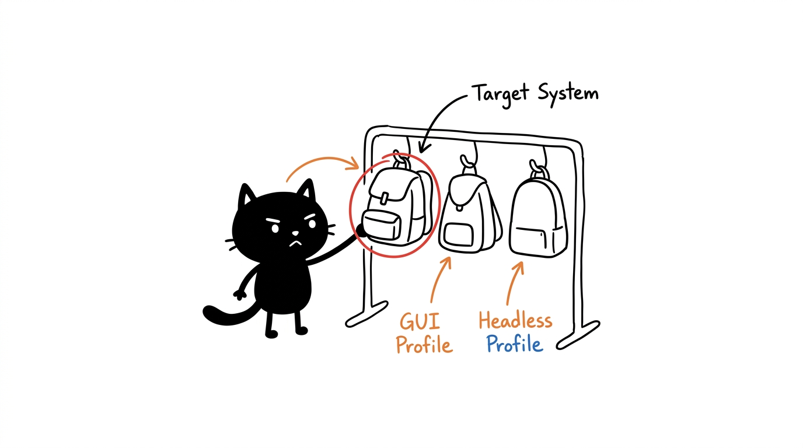

SPEC_04 // 1999AZZAR-MCPDOSIR: PROFIL_DAN_MATRIKS_KLIEN
Profil & Konfigurasi
Delapan profil deployment. Pilih tumpukan server yang sesuai dengan spesifikasi mesin Anda, lalu buat berkas konfigurasi klien yang presisi secara langsung — 80 kombinasi profil × klien, tervalidasi skemanya.

Matriks Profil
| Profil | Target Penggunaan | Sel Aktif |
|---|---|---|
| minimal | Tumpukan terkecil yang fungsional (semua jenis mesin) | mitosis, genome, enzyme |
| dev-workspace | Workstation desktop full-stack lengkap | mitosis, genome, membrane, nucleus, ribosome, enzyme, phenotype, cytosol |
| headless-server | CI/CD, cloud VPS (tanpa dependensi GUI) | mitosis, genome, membrane, nucleus, ribosome, enzyme, phenotype |
| research | Sintesis literatur, dokumen & riset pengetahuan | mitosis, genome, enzyme, membrane, cytosol |
| web-devops | Otomasi frontend, QA, dan verifikasi web | mitosis, genome, membrane, nucleus, phenotype, cytosol |
| android-testing | Insinyur QA mobile Android | mitosis, genome, nucleus, receptor, enzyme |
| 3d-modeling | Desainer 3D & pengembang game Blender | mitosis, genome, plastid, membrane, nucleus |
| all | Master agen tanpa batas | Seluruh 10 sel (295 alat) |
ATURAN HEADLESS
headless-server mengecualikan cytosol, receptor, dan plastid — nol dependensi Playwright/Chromium, ADB, atau Blender, startup instan pada server VPS/CI.Meja Kerja Konfigurasi
Pilih profil dan klien agen tujuan Anda. Output konfigurasi di bawah ini identik dengan apa yang dituliskan oleh skrip setup.sh.
OUTPUT // KONFIGURASI_KLIEN
// Pilih profil dan klien di atas.Kunci API & Akses
Hanya dua sel yang memerlukan kredensial opsional; delapan sel lainnya berjalan sepenuhnya tanpa kunci (zero-key). Jangan pernah melakukan commit kunci rahasia ke Git — skrip installer hanya menyuntikkannya ke file klien lokal.
| Sel | Variabel Lingkungan | Catatan Penggunaan |
|---|---|---|
| mitosis | OPENROUTER_API_KEY, GITHUB_TOKEN | Perkakas LLM + sinkronisasi prompt jarak jauh; berjalan offline dengan heuristik & Needle 3 jika tidak disetel |
| enzyme | GOOGLE_API_KEY, GOOGLE_CSE_ID | Pencarian Google kustom; otomatis fallback zero-key ke DuckDuckGo/arXiv/Google News/Wikipedia jika tidak disetel |